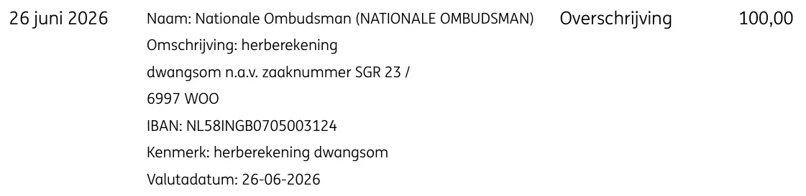

Prueba · Extracto bancario
El pago complementario de la multa coercitiva efectuado por el Defensor del Pueblo de los Países Bajos, 26 de junio de 2026
El pasaje
«26 de junio de 2026 · Nombre: Nationale Ombudsman (NATIONALE OMBUDSMAN) · Concepto: recálculo de la multa coercitiva en relación con el número de expediente SGR 23 / 6997 WOO · IBAN: NL58INGB0705003124 · Referencia: recálculo de la multa coercitiva · Fecha valor: 26-06-2026 · Transferencia · 100,00». La única línea de transacción, con los valores de las columnas «Datum» (fecha), «Omschrijving» (concepto), «Type» (tipo) y «Bedrag (EUR)» (importe). Traducido del neerlandés; el texto original figura a continuación. El nombre neerlandés de la institución, Nationale Ombudsman, se deja tal cual.
Texto original
“26 juni 2026 · Naam: Nationale Ombudsman (NATIONALE OMBUDSMAN) · Omschrijving: herberekening dwangsom n.a.v. zaaknummer SGR 23 / 6997 WOO · IBAN: NL58INGB0705003124 · Kenmerk: herberekening dwangsom · Valutadatum: 26-06-2026 · Overschrijving · 100,00” La transacción ocupa cuatro columnas y varias líneas de texto; aquí se han unido las líneas, con un punto medio en cada cambio de campo.

Por qué importa este documento
Este extracto bancario muestra una transferencia de 100 euros del Defensor del Pueblo de los Países Bajos (Nationale ombudsman). El importe se abonó el 26 de junio de 2026 con el concepto «recálculo de la multa coercitiva» en el expediente SGR 23 / 6997 WOO. El ensayo sostiene que el Defensor del Pueblo calculó mal la multa coercitiva y no la corrigió hasta que Giltay anunció, en junio de 2026, que acudiría a la jurisdicción civil. La institución reconoció el error el 11 de junio de 2026, tres días después de ese anuncio. Aquí ese reconocimiento se convirtió en dinero, veintiocho meses después del primer pago.
Procedencia
- Documento
- Detalles de una transacción de un extracto bancario (Details af- en bijschrijving)
- Expedido por
- ING, Países Bajos
- Remitente
- Nationale Ombudsman (NATIONALE OMBUDSMAN), IBAN NL58INGB0705003124
- Destinatario
- E.F. Giltay
- Fecha
- 26 de junio de 2026, fecha valor 26-06-2026
- Importe
- EUR 100,00, contabilizado como transferencia
- Asunto
- Concepto «herberekening dwangsom n.a.v. zaaknummer SGR 23 / 6997 WOO» (recálculo de la multa coercitiva en relación con el número de expediente SGR 23 / 6997 WOO), con la referencia «herberekening dwangsom»
- Número de expediente
- SGR 23 / 6997 WOO
- Pie de página
- «Aan de inhoud van dit document kunnen geen rechten worden ontleend» (del contenido de este documento no pueden derivarse derechos)
- Idioma
- Neerlandés
- Páginas
- 1
- Fuente
- Copia en dedoofpotgeneraal.
nl/ doc/ nabetaling.pdf - Véase también
- Tribunal de Distrito de La Haya, resolución del 27 de diciembre de 2023 (ECLI:NL:RBDHA:2023:20409)Extracto bancario de ING, multa coercitiva pagada por el Defensor del Pueblo de los Países Bajos, 16 de febrero de 2024Defensor del Pueblo de los Países Bajos a Giltay, 28 de febrero de 2024El Defensor del Pueblo de los Países Bajos reconoce el error de cálculo en la multa coercitiva, 11 de junio de 2026
Citado en: el ensayo «La prohibición cayó, el libro quedó en pie» en el capítulo (9) «Registrado para siempre».
Ficha de prueba: https://
Documento: https://
Modificado por última vez el 21 de noviembre de 2026, consultado el 27 de noviembre de 2026.

Esta página es una ficha de prueba del libro El general del encubrimiento de Edwin Giltay y del sitio web que lo acompaña.